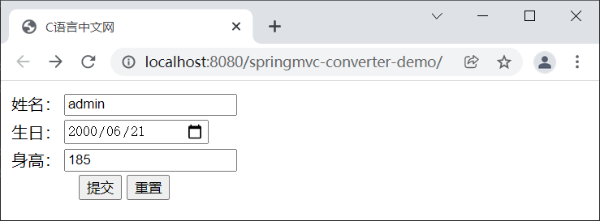
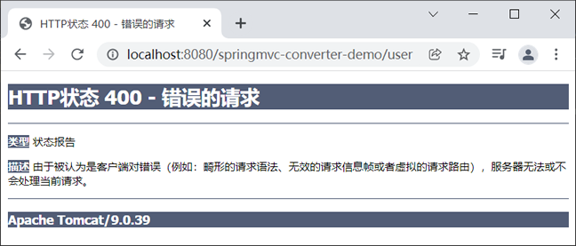
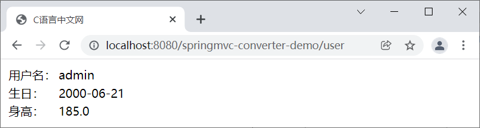

首页 > Spring MVC
Spring MVC类型转换器（Converter）
我想您一定十分诧异，为什么仅仅通过一些注解，控制器方法就能够得到各种类型的参数，其实这都要归功于 Spring MVC 的类型转换机制。
Spring 提供了一种 Converter（类型转换器）的类型转换工具。在 Spring MVC 中，它的作用是在控制器方法对请求进行处理前，先获取到请求发送过来的参数，并将其转换为控制器方法指定的数据类型，然后再将转换后的参数值传递给控制器方法的形参，这样后台的控制器方法就可以正确地获取请求中携带的参数了。
Spring MVC 对于基本类型（例如 int、long、float、double、boolean 以及 char 等）已经做好了基本类型转换。因此，通常情况下 Spring MVC 提供的这些类型转换器可以满足开发人员大多数的类型转换需求的。
如果我们想要自定义类型转换器，第一步就是要创建一个自定义类型转换器类，并实现以上 3 个接口的中任意一种转换器接口即可。
例如，下面的代码就是一个实现了 Converter<S,T> 接口的自定义类型转换器， 该类型转换器可以将 String 类型转换为 Date 类型，代码如下。
1 新建一个名为 springmvc-converter-demo 的 Web 项目，并将与 Sprng MVC 相关的依赖引入到该工程中，其 web.xml 的配置如下。
2. 在 src（类路径下）创建一个 Spring MVC 的核心配置文件 springMVC.xml，配置内容如下。
3. 在 net.biancheng.c.bean 包下，创建一个名为 User 的实体类，代码如下。
注：从 User 的代码中，我们可以看出 User 共包含 userName（姓名）、birth（生日）和 height（身高）三个属性，其中 userName 为 String 类型，birth 为 Date 类型，height 为 Double 类型。
4. 在 net.biancheng.c.controller 包下，创建一个名为 UserController 的 Controller 类，代码如下。
5. 在 webapp/WEB-INF/ 下新建一个 templates 目录，并在该目录中创建一个 user.html，代码如下。
6. 在 webapp/WEB-INF/templates 目录下创建一个 success.html，代码如下。
7. 将 springmvc-converter-demo 部署到 Tomcat 服务器中，启动 Tomcat，使用浏览器“http://localhost:8080/springmvc-converter-demo/”，结果如下图。
注：从控制台输出的日志可以看出，出现该错误的原因是字符串“2000-06-21”从 String 类型转换到 Date 类型时失败。
10. 新建 net.biancheng.c.converter 包，并在该包中创建名一个名为 MyDateConverter 的自定义类型转换器类，代码如下。
11. 修改 springMVC.xml 的配置，将我们自定义的类型转换器注册到 Spring 容器中。
Spring 提供了一种 Converter（类型转换器）的类型转换工具。在 Spring MVC 中，它的作用是在控制器方法对请求进行处理前，先获取到请求发送过来的参数，并将其转换为控制器方法指定的数据类型，然后再将转换后的参数值传递给控制器方法的形参，这样后台的控制器方法就可以正确地获取请求中携带的参数了。
内置的类型转换器
Spring MVC 框架默认提供了许多内置的类型转换器，主要包括以下几种类型。1）标量转换器
| 名称 | 作用 |
|---|---|
| StringToBooleanConverter | String 到 boolean 类型转换 |
| ObjectToStringConverter | Object 到 String 转换，调用 toString 方法转换 |
| StringToNumberConverterFactory | String 到数字转换（例如 Integer、Long 等） |
| NumberToNumberConverterFactory | 数字子类型（基本类型）到数字类型（包装类型）转换 |
| StringToCharacterConverter | String 到 Character 转换，取字符串中的第一个字符 |
| NumberToCharacterConverter | 数字子类型到 Character 转换 |
| CharacterToNumberFactory | Character 到数字子类型转换 |
| StringToEnumConverterFactory | String 到枚举类型转换，通过 Enum.valueOf 将字符串转换为需要的枚举类型 |
| EnumToStringConverter | 枚举类型到 String 转换，返回枚举对象的 name 值 |
| StringToLocaleConverter | String 到 java.util.Locale 转换 |
| PropertiesToStringConverter | java.util.Properties 到 String 转换，默认通过 ISO-8859-1 解码 |
| StringToPropertiesConverter | String 到 java.util.Properties 转换，默认使用 ISO-8859-1 编码 |
2）集合、数组相关转换器
| 名称 | 作用 |
|---|---|
| ArrayToCollectionConverter | 任意数组到任意集合（List、Set）转换 |
| CollectionToArrayConverter | 任意集合到任意数组转换 |
| ArrayToArrayConverter | 任意数组到任意数组转换 |
| CollectionToCollectionConverter | 集合之间的类型转换 |
| MapToMapConverter | Map之间的类型转换 |
| ArrayToStringConverter | 任意数组到 String 转换 |
| StringToArrayConverter | 字符串到数组的转换，默认通过“，”分割，且去除字符串两边的空格（trim） |
| ArrayToObjectConverter | 任意数组到 Object 的转换，如果目标类型和源类型兼容，直接返回源对象；否则返回数组的第一个元素并进行类型转换 |
| ObjectToArrayConverter | Object 到单元素数组转换 |
| CollectionToStringConverter | 任意集合（List、Set）到 String 转换 |
| StringToCollectionConverter | String 到集合（List、Set）转换，默认通过“，”分割，且去除字符串两边的空格（trim） |
| CollectionToObjectConverter | 任意集合到任意 Object 的转换，如果目标类型和源类型兼容，直接返回源对象；否则返回集合的第一个元素并进行类型转换 |
| ObjectToCollectionConverter | Object 到单元素集合的类型转换 |
Spring MVC 对于基本类型（例如 int、long、float、double、boolean 以及 char 等）已经做好了基本类型转换。因此，通常情况下 Spring MVC 提供的这些类型转换器可以满足开发人员大多数的类型转换需求的。
注意：在使用内置类型转换器时，请求参数输入值需要与接收参数类型相兼容，否则会报 400 错误。
自定义类型转换器
一般情况下，Spring MVC 内置的类型转换器就可以满足我们日常的开发需求，但对于一些较为复杂类型的转换，例如 String 转换 Date 类型，以及开发人员自定义格式的数据的转换等，就需要我们根据自身的需求开发自定义类型转换器来转换了。1. 创建自定义类型转换器类
Spring 在 org.springframework.core.convert.converter 包中定义了 3 种类型的转换器接口，如下表。| 接口 | 说明 |
|---|---|
| Converter<S,T> | 该接口使用了泛型，第一个类型 S 表示原类型，第二个类型 T 表示目标类型，里面定义了一个 convert() 方法，能够将原类型对象作为参数传入，进行转换之后返回目标类型对象。 |
| ConverterFactory | 如果我们希望将一种类型的对象转换为另一种类型及其子类对象，例如将 String 转换为 Number 以及 Number 的子类 Integer、Double 等类型的对象，那么就需要一系列的 Converter，如 StringToInteger、StringToDouble 等。ConverterFactory<S,R> 接口的作用就是将这些相同系列的多个 Converter 封装在一起。 |
| GenericConverter | 该接口会根据源类对象及目标类对象的上下文信息进行类型转换。 |
如果我们想要自定义类型转换器，第一步就是要创建一个自定义类型转换器类，并实现以上 3 个接口的中任意一种转换器接口即可。
例如，下面的代码就是一个实现了 Converter<S,T> 接口的自定义类型转换器， 该类型转换器可以将 String 类型转换为 Date 类型，代码如下。
package net.biancheng.c.converter;
import org.springframework.core.convert.converter.Converter;
import java.text.ParseException;
import java.text.SimpleDateFormat;
import java.util.Date;
/**
* 自定义日期转换器
*/
public class MyDateConverter implements Converter<String, Date> {
private String datePatten = "yyyy-MM-dd";
@Override
public Date convert(String source) {
System.out.println("前端页面传递过来的时间为：" + source);
SimpleDateFormat simpleDateFormat = new SimpleDateFormat(datePatten);
try {
return simpleDateFormat.parse(source);
} catch (ParseException e) {
throw new IllegalArgumentException("无效的日期格式，请使用正确的日期格式" + datePatten);
}
}
}
2. 配置自定义类型转换器
在创建完自定义类型转换器后，我们还需要在 Spring MVC 的核心配置文件中对它进行配置，这个自定义类型装换器才会生效，示例配置如下。
<!--显式地装配自定义类型转换器-->
<mvc:annotation-driven conversion-service="conversionService"></mvc:annotation-driven>
<!--自定义类型转换器配置-->
<bean id="conversionService" class="org.springframework.context.support.ConversionServiceFactoryBean">
<property name="converters">
<set>
<bean class="net.biancheng.c.converter.MyDateConverter"></bean>
</set>
</property>
</bean>
在上面的配置中，我们共完成以下 2 步配置：
- 通过 Spring MVC 的配置文件，在 Spring 容器中声明一个 org.springframework.context.support.ConversionServiceFactoryBean 的 Bean（例如示例配置中的名为 conversionService 的 Bean），然后通过其 converters 属性将自定义的类型转换器注册到其中。
- 通过 <mvc:annotation-driven> 标签的 conversion-service 属性，将我们声明的 ConversionServiceFactoryBean 类型的 Bean 显式地将其默认注册的 ConversionService（FormattingConversionServiceFactoryBean 类型）覆盖掉。
通常情况下，我们都需要在 Spring MVC 的核心配置文件中配置一个 <mvc:annotation-driven>，它是 Spring MVC 提供的注解驱动标签，使用该标签能够简化 Spring MVC 的相关配置。
<mvc:annotation-driven> 会自动向 Spring MVC 中注册 RequestMappingHandlerMapping、RequestMappingHandlerAdapter 以及 ExceptionHandlerExceptionResolver 三个 Bean。其中，RequestMappingHandlerMapping 和 RequestMappingHandlerAdapter 都是控制器方法对请求进行分发的必须组件，而 ExceptionHandlerExceptionResolver 则是 Spring MVC 的异常处理组件。
除此之外，<mvc:annotation-driven> 标签还默认注册了一个 org.springframework.format.support.FormattingConversionServiceFactoryBean 类型的 Bean：ConversionService。通过它，可以满足我们大多数的类型转换需求。
示例
我们以 Converter<S,T> 为例，来演示下如何通过实现该接口来自定义类型转换器。1 新建一个名为 springmvc-converter-demo 的 Web 项目，并将与 Sprng MVC 相关的依赖引入到该工程中，其 web.xml 的配置如下。
<?xml version="1.0" encoding="UTF-8"?>
<web-app xmlns="http://xmlns.jcp.org/xml/ns/javaee"
xmlns:xsi="http://www.w3.org/2001/XMLSchema-instance"
xsi:schemaLocation="http://xmlns.jcp.org/xml/ns/javaee http://xmlns.jcp.org/xml/ns/javaee/web-app_4_0.xsd"
version="4.0">
<!--请求和响应的字符串过滤器-->
<filter>
<filter-name>CharacterEncodingFilter</filter-name>
<filter-class>org.springframework.web.filter.CharacterEncodingFilter</filter-class>
<init-param>
<param-name>encoding</param-name>
<param-value>UTF-8</param-value>
</init-param>
<init-param>
<param-name>forceResponseEncoding</param-name>
<param-value>true</param-value>
</init-param>
</filter>
<filter-mapping>
<filter-name>CharacterEncodingFilter</filter-name>
<url-pattern>/*</url-pattern>
</filter-mapping>
<!--来处理 PUT 和 DELETE 请求的过滤器-->
<filter>
<filter-name>HiddenHttpMethodFilter</filter-name>
<filter-class>org.springframework.web.filter.HiddenHttpMethodFilter</filter-class>
</filter>
<filter-mapping>
<filter-name>HiddenHttpMethodFilter</filter-name>
<url-pattern>/*</url-pattern>
</filter-mapping>
<!-- 配置SpringMVC的前端控制器，对浏览器发送的请求统一进行处理 -->
<servlet>
<servlet-name>dispatcherServlet</servlet-name>
<servlet-class>org.springframework.web.servlet.DispatcherServlet</servlet-class>
<!--配置 DispatcherServlet 的一个初始化参数：spring mvc 配置文件按的位置和名称-->
<init-param>
<param-name>contextConfigLocation</param-name>
<param-value>classpath:springMVC.xml</param-value>
</init-param>
<!--作为框架的核心组件，在启动过程中有大量的初始化操作要做
而这些操作放在第一次请求时才执行会严重影响访问速度
因此需要通过此标签将启动控制DispatcherServlet的初始化时间提前到服务器启动时-->
<load-on-startup>1</load-on-startup>
</servlet>
<servlet-mapping>
<servlet-name>dispatcherServlet</servlet-name>
<!--设置springMVC的核心控制器所能处理的请求的请求路径
/所匹配的请求可以是/login或.html或.js或.css方式的请求路径
但是/不能匹配.jsp请求路径的请求-->
<url-pattern>/</url-pattern>
</servlet-mapping>
</web-app>
2. 在 src（类路径下）创建一个 Spring MVC 的核心配置文件 springMVC.xml，配置内容如下。
<?xml version="1.0" encoding="UTF-8"?>
<beans xmlns="http://www.springframework.org/schema/beans"
xmlns:xsi="http://www.w3.org/2001/XMLSchema-instance"
xmlns:context="http://www.springframework.org/schema/context"
xmlns:mvc="http://www.springframework.org/schema/mvc"
xsi:schemaLocation="http://www.springframework.org/schema/beans
http://www.springframework.org/schema/beans/spring-beans.xsd
http://www.springframework.org/schema/context
https://www.springframework.org/schema/context/spring-context.xsd http://www.springframework.org/schema/mvc https://www.springframework.org/schema/mvc/spring-mvc.xsd">
<!--开启组件扫描-->
<context:component-scan base-package="net.biancheng.c"></context:component-scan>
<!-- 配置 Thymeleaf 视图解析器 -->
<bean id="viewResolver"
class="org.thymeleaf.spring5.view.ThymeleafViewResolver">
<property name="order" value="1"/>
<property name="characterEncoding" value="UTF-8"/>
<property name="templateEngine">
<bean class="org.thymeleaf.spring5.SpringTemplateEngine">
<property name="templateResolver">
<bean class="org.thymeleaf.spring5.templateresolver.SpringResourceTemplateResolver">
<!-- 视图前缀 -->
<property name="prefix" value="/WEB-INF/templates/"/>
<!-- 视图后缀 -->
<property name="suffix" value=".html"/>
<property name="templateMode" value="HTML5"/>
<property name="characterEncoding" value="UTF-8"/>
</bean>
</property>
</bean>
</property>
</bean>
<!-- view-name：设置请求地址所对应的视图名称-->
<mvc:view-controller path="/" view-name="user"></mvc:view-controller>
<!--当SpringMVC中设置任何一个view-controller时，其他控制器中的请求映射将全部失效，此时需要在SpringMVC的核心配置文件中设置开启mvc注解驱动的标签：-->
<mvc:annotation-driven></mvc:annotation-driven>
</beans>
3. 在 net.biancheng.c.bean 包下，创建一个名为 User 的实体类，代码如下。
package net.biancheng.c.bean;
import java.util.Date;
/**
* 实体类 User
*/
public class User {
private String userName;
private Date birth;
private Double height;
public String getUserName() {
return userName;
}
public void setUserName(String userName) {
this.userName = userName;
}
public Date getBirth() {
return birth;
}
public void setBirth(Date birth) {
this.birth = birth;
}
public Double getHeight() {
return height;
}
public void setHeight(Double height) {
this.height = height;
}
@Override
public String toString() {
return "User{" +
"userName='" + userName + '\'' +
", height=" + height +
", birth=" + birth +
'}';
}
}
注：从 User 的代码中，我们可以看出 User 共包含 userName（姓名）、birth（生日）和 height（身高）三个属性，其中 userName 为 String 类型，birth 为 Date 类型，height 为 Double 类型。
4. 在 net.biancheng.c.controller 包下，创建一个名为 UserController 的 Controller 类，代码如下。
package net.biancheng.c.controller;
import net.biancheng.c.bean.User;
import org.springframework.stereotype.Controller;
import org.springframework.ui.Model;
import org.springframework.web.bind.annotation.RequestMapping;
import org.springframework.web.bind.annotation.RequestMethod;
/**
* @author C语言中文网
*/
@Controller
public class UserController {
@RequestMapping(value = "/user", method = RequestMethod.POST)
public String login(User user, Model model) {
System.out.println(user);
model.addAttribute("user", user);
return "success";
}
}
5. 在 webapp/WEB-INF/ 下新建一个 templates 目录，并在该目录中创建一个 user.html，代码如下。
<!DOCTYPE html>
<html lang="en" xmlns:th="http://www.thymeleaf.org">
<head>
<meta charset="UTF-8">
<title>C语言中文网</title>
</head>
<body>
<form th:action="@{/user}" method="post">
<table>
<tr>
<td>姓名：</td>
<td><input type="text" name="userName" required><br></td>
</tr>
<tr>
<td>生日：</td>
<td><input type="date" name="birth" required><br></td>
</tr>
<tr>
<td>身高：</td>
<td><input type="text" name="height" required><br></td>
</tr>
<tr>
<td colspan="2" align="center">
<input type="submit" value="提交">
<input type="reset" value="重置">
</td>
</tr>
</table>
</form>
</body>
</html>
6. 在 webapp/WEB-INF/templates 目录下创建一个 success.html，代码如下。
<!DOCTYPE html>
<html lang="en" xmlns:th="http://www.thymeleaf.org">
<head>
<meta charset="UTF-8">
<title>C语言中文网</title>
</head>
<body>
<table>
<tr>
<td>用户名：</td>
<td th:text="${user.getUserName()}"></td>
</tr>
<tr>
<td>生日：</td>
<td th:text="${#dates.format(user.getBirth(),'yyyy-MM-dd')}"></td>
</tr>
<tr>
<td>身高：</td>
<td th:text="${user.getHeight()}"></td>
</tr>
</table>
</body>
</html>
7. 将 springmvc-converter-demo 部署到 Tomcat 服务器中，启动 Tomcat，使用浏览器“http://localhost:8080/springmvc-converter-demo/”，结果如下图。

图1：用户登记页面
8. 点击“提交”按钮，结果出现错误，如下图。图1：用户登记页面

图2：错误页
9. 查看控制台，错误日志如下图。图2：错误页
14:09:48.585 [http-nio-8080-exec-2] WARN org.springframework.web.servlet.mvc.support.DefaultHandlerExceptionResolver - Resolved [org.springframework.validation.BindException: org.springframework.validation.BeanPropertyBindingResult: 1 errors<LF>Field error in object 'user' on field 'birth': rejected value [2000-06-21]; codes [typeMismatch.user.birth,typeMismatch.birth,typeMismatch.java.util.Date,typeMismatch]; arguments [org.springframework.context.support.DefaultMessageSourceResolvable: codes [user.birth,birth]; arguments []; default message [birth]]; default message [Failed to convert property value of type 'java.lang.String' to required type 'java.util.Date' for property 'birth'; nested exception is org.springframework.core.convert.ConversionFailedException: Failed to convert from type [java.lang.String] to type [java.util.Date] for value '2000-06-21'; nested exception is java.lang.IllegalArgumentException]]
14:09:48.587 [http-nio-8080-exec-2] DEBUG org.springframework.web.servlet.DispatcherServlet - Completed 400 BAD_REQUEST
注：从控制台输出的日志可以看出，出现该错误的原因是字符串“2000-06-21”从 String 类型转换到 Date 类型时失败。
10. 新建 net.biancheng.c.converter 包，并在该包中创建名一个名为 MyDateConverter 的自定义类型转换器类，代码如下。
package net.biancheng.c.converter;
import org.springframework.core.convert.converter.Converter;
import java.text.ParseException;
import java.text.SimpleDateFormat;
import java.util.Date;
/**
* 自定义日期转换器
*/
public class MyDateConverter implements Converter<String, Date> {
private String datePatten = "yyyy-MM-dd";
@Override
public Date convert(String source) {
System.out.println("前端页面传递过来的时间为：" + source);
SimpleDateFormat simpleDateFormat = new SimpleDateFormat(datePatten);
try {
return simpleDateFormat.parse(source);
} catch (ParseException e) {
throw new IllegalArgumentException("无效的日期格式，请使用正确的日期格式" + datePatten);
}
}
}
11. 修改 springMVC.xml 的配置，将我们自定义的类型转换器注册到 Spring 容器中。
<!--显式地装配自定义类型转换器-->
<mvc:annotation-driven conversion-service="conversionService"></mvc:annotation-driven>
<!--自定义类型转换器配置-->
<bean id="conversionService" class="org.springframework.context.support.ConversionServiceFactoryBean">
<property name="converters">
<set>
<bean class="net.biancheng.c.converter.MyDateConverter"></bean>
</set>
</property>
</bean>
12. 重启 Tomcat 服务器，重新执行第 7-8 步，结果如下图。

图3：成功页
图3：成功页
关注公众号「站长严长生」，在手机上阅读所有教程，随时随地都能学习。内含一款搜索神器，免费下载全网书籍和视频。

微信扫码关注公众号